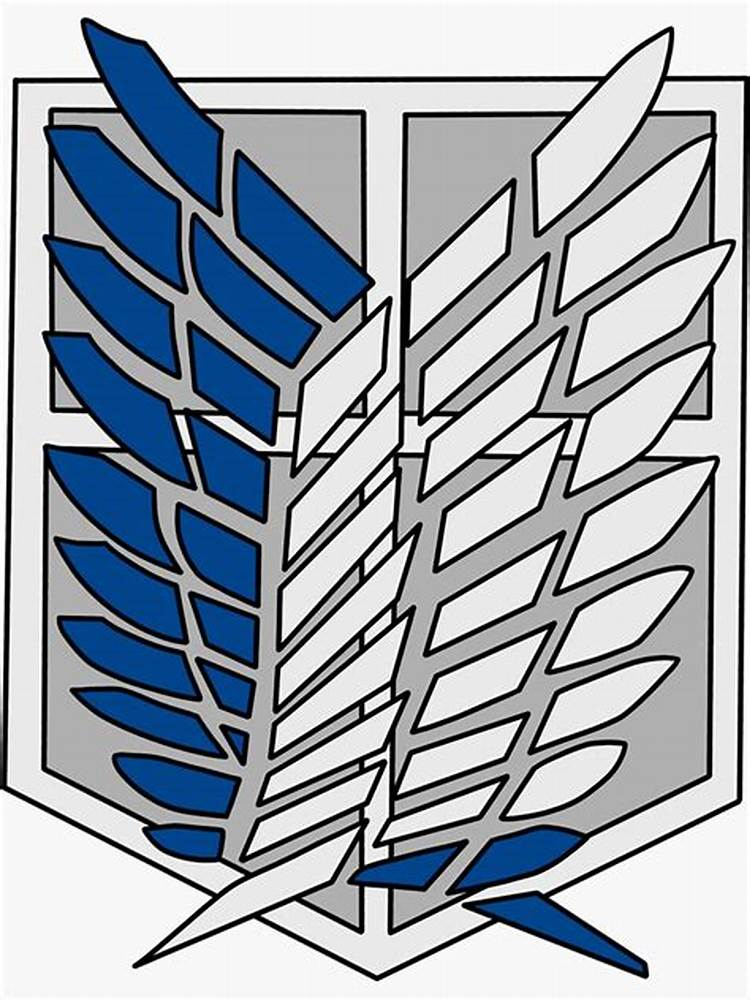

故事大綱

《進擊的巨人》（Attack on Titan）是一部由諫山創創作的日本漫畫及改編動畫，背景設置在一個人類居住於巨大城牆內的世界。人類被稱為巨人的怪物威脅所困，這些巨人以吞噬人類為生。故事以主角艾連·葉卡（Eren Yeager）及其朋友米卡莎·阿卡曼（Mikasa Ackerman）和阿爾敏·亞魯雷特（Armin Arlert）的視角展開。
故事開始於艾連的故鄉席甘希納區遭巨人襲擊，母親被殺。他發誓消滅所有巨人並加入了調查兵團。隨著劇情展開，艾連展現出能變身為巨人的能力，成為人類對抗巨人的重要戰力。
隨著調查深入，主角群發現巨人其實是人類變異而來，並揭露了背後的歷史真相：巨人之力源於九大巨人，這些力量是由馬雷與艾爾迪亞人爭奪的產物。艾連得知牆內人類實際上是被馬雷囚禁的艾爾迪亞後裔，牆外還有廣闊的世界。
最終，艾連因對自由的執著走上極端，決定啟動「地鳴」，利用始祖巨人的力量驅動無數巨人摧毀世界，意圖為艾爾迪亞爭取未來。三笠等人為阻止艾連，不得不做出痛苦的抉擇。
為甚麼受歡迎?
《進擊的巨人》的成功與受歡迎度源於其深刻的故事內涵、緊湊的劇情結構以及對人性與自由的探索。這部作品不僅僅是一部冒險故事，更是一場對生命本質的深刻討論。
首先，《進擊的巨人》建立了一個獨特且令人著迷的世界觀。故事開始時，人類生活在三重巨牆內，外界被充滿威脅的巨人佔據。這種設定營造出壓迫與絕望的氛圍，而隨著劇情推進，關於巨人的起源、牆外世界的真相以及人類歷史的揭露，進一步吸引觀眾持續關注。這種謎題的逐步展開使人目不轉睛，並讓故事充滿層次感。
其次，角色的塑造是本作的一大亮點。主角艾連·葉卡起初是一個單純的少年，因母親被巨人吞噬而發誓消滅巨人，隨後卻因自由的執念而成為故事最大的反派之一。他的成長和轉變引發觀眾對正義與邪惡的反思。此外，三笠、阿爾敏等角色也有著鮮明的個性與成長弧線，讓觀眾在冒險之外，也能感受到角色間的深厚情感。
此外，故事的主題深刻且具普遍性。《進擊的巨人》探討了自由的代價、戰爭的殘酷以及人性的複雜。艾連的行動雖然激烈且極端，但從某種角度來看，他不過是在追求他理解的「自由」。而圍繞在角色們身邊的矛盾，也讓觀眾深思：在權力、道德與生存的抉擇中，人類真正需要的究竟是什麼？
最後，動畫製作的高水準更是提升了《進擊的巨人》的影響力。緊湊的節奏、震撼的戰鬥場面以及動人的配樂，讓作品成為視覺與聽覺的雙重盛宴。
總的來說，《進擊的巨人》以其扣人心弦的故事、深刻的主題和優秀的製作，超越了傳統動漫的框架，成為一部世界範圍內的經典之作。